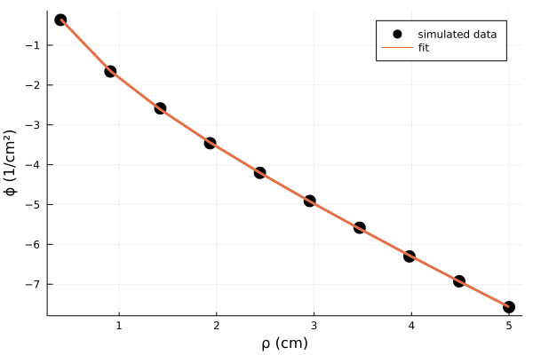

Inverse Fitting
When dealing with experimental data, we often want to use our forward models in the inverse problem to recover quantitative data from measurements.
Here, we will walk through some basic examples to recover optical properties from both steady-state and time-domain measurements.
Steady-State
The first thing we want to do is simulate some experimental data. Let's do that by defining our ρ values and true optical properties....
julia> using LightPropagation
julia> ρ_arr = range(0.4, stop = 5.0, length = 10) # define our SDS we want to simulate values for
julia> μa_true = 0.2; μsp_true = 10.0 # define true optical properties
julia> ydata = fluence_DA_semiinf_CW.(ρ_arr, μa_true, μsp_true)One unfortunate thing is experiments usually have some noise... Let's use Noise.jl to add some multiplicative white noise with stdev=0.05 and mean=1.0...
julia> using Noise
julia> y_noise = mult_gauss(ydata, 0.05, 1.0)Now we are ready to fit. Let's use a standard nonlinear least squares Levenberg-Marquardt algorithm with LsqFit.jl
# need to set the bounds in the inverse problem
ub = [1.0, 50.0] # upper bound for [μa, μsp]
lb = [0.01, 3.0] # lower bound for [μa, μsp]
p0 = [0.12, 18.2] # some initial guess for our algorithm
# set up our model we want to fit with
model(ρ, β) = log10.(fluence_DA_semiinf_CW.(ρ, β[1], β[2]))The previous code block sets up the inverse problem for LsqFit.jl. It would be best to read the docs of LsqFit.jl first. One thing we need to be careful of is properly setting up our model to fit the data. LsqFit needs to know for what xdata it is trying to fit at and for what parameters β it is trying to optimize for. In our case β is an array containing the optical properties β = [μa, μsp] we are seeking. It is also advantageous to fit on a log scale to better normalize the residuals at very high and low fluence values.
We are now ready to fit...
julia> using LsqFit
julia> fit = curve_fit(model, ρ_arr, log10.(y_noise), p0, lower=lb, upper=ub)
## Let's quickly plot our results
julia> using Plots
julia> scatter(ρ_arr, log10.(y_noise), xlabel = "ρ (cm)", ylabel = "ϕ (1/cm²)", c=:black, label = "simulated data", ms=8) # with noise
julia> plot!(ρ_arr, model(ρ_arr, fit.param), lw = 3, label = "fit")
julia> #plot!(ρ_arr, model(ρ_arr, [μa_true, μsp_true]), label = "true") plots the true curve
Note that this will take several seconds to run in the beginning due to compile times but will be faster after the first plot. We can call our fit results...
julia> fit.param
2-element Vector{Float64}:
0.2007638299707845
9.95573558637554Sometimes we also want to randomize our initial guess. We could instead define p0 like...
julia> using Distributions
julia> p0 = [rand(Uniform(lb[1], ub[1])), rand(Uniform(lb[2], ub[2]))]Time-Domain
A similar approach in the time-domain can occur except our xdata is now t instead of ρ
julia> t_arr = range(0.01, stop = 5.0, length = 500) # define our SDS we want to simulate values for
julia> μa_true = 0.26; μsp_true = 13.0; ρ = 1.0 # define true optical properties and a single SDS
julia> ydata = fluence_DA_semiinf_TD(t_arr, ρ, μa_true, μsp_true)Now, the noise in the time-domain for each bin typically follows a poisson distribution...
julia> using Noise
julia> y_noise = poisson(log10.(ydata), 500)
# need to set the bounds in the inverse problem
julia> ub = [1.0, 50.0] # upper bound for [μa, μsp]
julia> lb = [0.01, 3.0] # lower bound for [μa, μsp]
julia> p0 = [0.12, 18.2] # some initial guess for our algorithm
# set up our model we want to fit with
julia> model(t, β) = log10.(fluence_DA_semiinf_TD(t, ρ, β[1], β[2]))We are now ready to fit...
julia> using LsqFit
julia> fit = curve_fit(model, t_arr, y_noise, p0, lower=lb, upper=ub)
## Let's quickly plot our results
julia> using Plots
julia> scatter(t_arr, y_noise, xlabel = "ρ (cm)", ylabel = "ϕ (1/cm²)", c=:black, label = "simulated data", ms=8) # with noise
julia> plot!(t_arr, model(t_arr, fit.param), lw = 3, label = "fit")
julia> fit.param
2-element Vector{Float64}:
0.2600394078015929
12.913002920897537Fitting in layered media
The principles described previously apply similarly to layered media where we are just increasing the number of parameters we are fitting with. Let's take for example a 2-layer media which yields potential variables of μa1, μa2, μsp1, μsp2, l1, l2. Now, this problem is already significantly more complex than the semi-infinite case when we were fitting for just one parameter. First, let's limit the scope to just fitting the optical properties and assume that the layer thickness are known. We can set up the problem like so...
julia> t_arr = range(0.05, stop = 2.0, length = 1000)
julia> ub = [1.0, 1.0, 50.0, 50.0] # upper bound for [μa1, μa2, μsp1, μsp2]
julia> lb = [0.01, 0.01, 3.0, 3.0] # upper bound for [μa1, μa2, μsp1, μsp2]
julia> p0 = [0.02, 0.02, 11.0, 11.0] # initial guess for [μa1, μa2, μsp1, μsp2]We can now set up our ydata like the following...
julia> ρ = 1.0; n_med = [1.0, 1.0]; n_ext = 1.0; a = 5.0; z = 0.0
julia> μa = [0.01, 0.12]
julia> μsp = [8.2, 12.8]
julia> l = [1.0, 4.0]
julia> ydata = log10.(abs.(fluence_DA_Nlay_cylinder_TD(t_arr, ρ, μa, μsp, n_ext, n_med, l, a, z, besselroots[1:600])))One thing we need to be careful about is the fluence returning a negative value so we take the absolute value here. We can also use structures to pass arguments to the function. The next step is to set up our model but here β must contain an array of all our parameters...
julia> model(t, β) = log10.(abs.(fluence_DA_Nlay_cylinder_TD(t, ρ, [β[1], β[2]], [β[3], β[4]], n_ext, n_med, l, a, z, besselroots[1:600])))
## we can then fit as before
julia> fit = curve_fit(model, t_arr, ydata, p0, lower=lb, upper=ub)And now again we can see how the model did (with no noise)...
julia> fit.param
4-element Vector{Float64}:
0.010000000000042501
0.12000000000000642
8.199999999999571
12.800000000031716So now let's say we don't know the first layer thickness....
julia> t_arr = range(0.05, stop = 2.0, length = 1000)
julia> ub = [1.0, 1.0, 50.0, 50.0, 4.0] # upper bound for [μa1, μa2, μsp1, μsp2, l1]
julia> lb = [0.01, 0.01, 3.0, 3.0, 0.4] # upper bound for [μa1, μa2, μsp1, μsp2, l1]
julia> p0 = [0.02, 0.02, 11.0, 11.0, 2.0] # initial guess for [μa1, μa2, μsp1, μsp2, l1]We can keep the same ydata as before but we must make our model take a fifth parameter like so...
julia> model(t, β) = log10.(abs.(fluence_DA_Nlay_cylinder_TD(t, ρ, [β[1], β[2]], [β[3], β[4]], n_ext, n_med, [β[5],l[2]], a, z, besselroots[1:600])))
## we can then fit as before
julia> fit = curve_fit(model, t_arr, ydata, p0, lower=lb, upper=ub)... and the results
julia> fit.param
5-element Vector{Float64}:
0.01
0.17771692223609836
8.232060952875878
3.0
1.5090937686394759Unfortunately, this did not produce very good results as this problem is significantly more difficult. We probably need to consider fitting with multiple differnet initial guesses and finding the best fit of those.... Let's try a slightly better guess...
julia> p0 = [0.013, 0.16, 10.0, 15.0, 1.3]
julia> fit = curve_fit(model, t_arr, ydata, p0, lower=lb, upper=ub)
julia> fit.param
5-element Vector{Float64}:
0.01
0.12000000000085953
8.200000000001857
12.799999999834535
1.0000000000043645We could also set this up as a general optimization problem like...
julia> function optim_model(β, t, ydata; ρ = 1.0, l = 10.0, z = 0.0, n_ext = 1.0, n_med = [1.0, 1.0])
ymodel = log10.(abs.(fluence_DA_Nlay_cylinder_TD(t, ρ, [β[1], β[2]], [β[3], β[4]], n_ext, n_med, [β[5],l], a, z, besselroots[1:600])))
return sum((ydata .- ymodel).^2)
end
julia> using BlackBoxOptim
julia> bboptimize(β -> optim_model(β, t_arr, ydata), p0; SearchRange = [(0.005, 1.0), (0.01, 1.0), (3.0, 50.0), (3.0, 50.0), (0.4, 4.0)], MaxTime = 60.0, Method = :adaptive_de_rand_1_bin)
Optimization stopped after 44479 steps and 60.00 seconds
Termination reason: Max time (60.0 s) reached
Steps per second = 741.31
Function evals per second = 743.03
Improvements/step = Inf
Total function evaluations = 44582
Best candidate found: [0.01, 0.220412, 8.17724, 3.0, 1.51944]
Fitness: 0.022200604Though, such a naive implementation does not produce great results even after a minute of optimization.
Automatic Differentiation
Because we do have access to gradient/jacobian information it is probably best to use it. In the previous examples using LsqFit.jl a central differences technique was utilized to find gradient information, however this can be significantly slower and less accurate. Let's looks at fitting layered solutions in the spatial domain using auto-diff.
julia> ρ_arr = range(0.5, stop = 4.0, length = 10)
julia> ub = [1.0, 1.0, 50.0, 50.0, 4.0] # upper bound for [μa1, μa2, μsp1, μsp2, l1]
julia> lb = [0.01, 0.01, 3.0, 3.0, 0.4] # upper bound for [μa1, μa2, μsp1, μsp2, l1]
julia> p0 = [0.02, 0.02, 11.0, 11.0, 2.0] # initial guess for [μa1, μa2, μsp1, μsp2, l1]
julia> n_med = [1.0, 1.0]; n_ext = 1.0; a = 5.0; z = 0.0
julia> μa = [0.01, 0.12]
julia> μsp = [8.2, 12.8]
julia> l = [1.0, 4.0]
julia> ydata = log10.(abs.(map(ρ -> fluence_DA_Nlay_cylinder_CW(ρ, μa, μsp, n_ext, n_med, l, a, z, besselroots[1:600]), ρ_arr)))
julia> model(ρ_arr, β) = log10.(abs.((map(ρ -> fluence_DA_Nlay_cylinder_CW(ρ, [β[1], β[2]], [β[3], β[4]], n_ext, n_med, [β[5],l[2]], a, z, besselroots[1:600]),
ρ_arr))))
## Let's do central difference first
julia> fit = curve_fit(model, ρ_arr, ydata, p0, lower=lb, upper=ub)
julia> fit.param
5-element Vector{Float64}:
0.01
0.12000000008686881
8.200000000444339
12.799999996164786
1.0000000001194502This interestingly enough produces near exact values with this initial guess... though in a slightly different setup the time-domain struggled to converge. Let's check the time to run the curve fitting...
julia> @btime fit = curve_fit(model, ρ_arr, ydata, p0, lower=lb, upper=ub)
1.961 s (240847 allocations: 102.07 MiB)So this took close to 2 seconds to run. This implementation is rather naive because we are regenerating new fluence values at each SDS from scratch which repeats a lot of similar code. Further optimizing this along with multi-threading could siginificantly decrease this time. Anyway let's see the output and benchmarks when we use autodiff instead for gradient/jacobian information...
julia> @btime fit = curve_fit(model, ρ_arr, ydata, p0, lower=lb, upper=ub; autodiff=:forwarddiff)
518.778 ms (60068 allocations: 23.80 MiB)julia> fit.param
5-element Vector{Float64}:
0.010000000014621547
0.11999999992354275
8.199999999622381
12.800000003128938
0.9999999998932497So this example take almost half a second which is ~4x faster than the central difference approach.